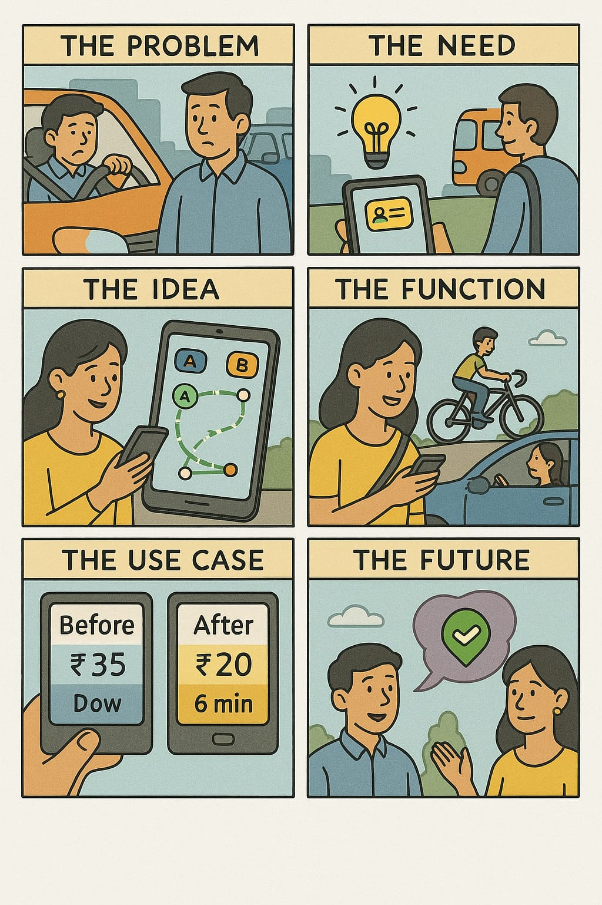
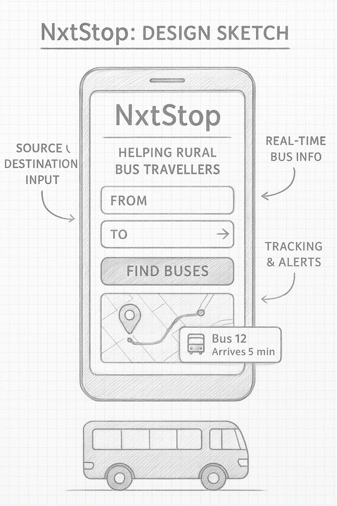

NxtStop
A rural bus tracking web app to help daily commuters access private buses in real time.
Project Overview
NxtStop is designed to improve rural transportation by tracking private buses, showing arrival times, and providing route info. It's a lightweight solution using HTML, CSS, and JavaScript.
Key Features
- Live bus location preview
- Searchable bus routes
- Lightweight UI for rural users

